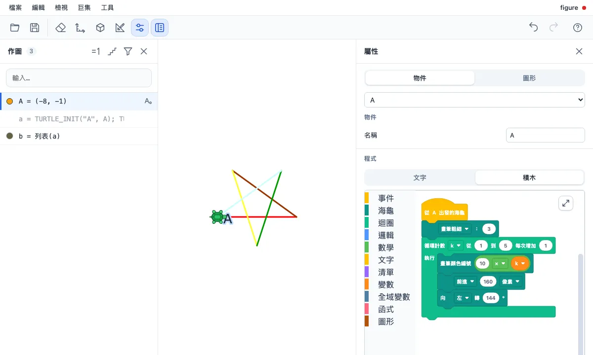

運算式與滑桿
運算式
凡是既不是點也不是指令的列，都會建立一個運算式，顯示在左上角，保留兩位小數。其類型由文字決定：
| 列 | 類型 |
|---|---|
a = 3、list = [1, 2, 3]
|
常數 |
t = "你好" |
文字 |
f = 0.5x^2 - 4 |
x（y、z、t）的函數；f(2)
呼叫它，f'(2) 呼叫它的導數
|
f(x) = ax^2 + bx + c |
函數的曲線，會被畫出：ax 讀作 a
x，並建立滑桿 a、b、c；f(2)
也呼叫它
|
E = d(A, B) |
測量值，圖形移動時重新計算 |
u = "AB = " + round(d(A, B)*100)/100
|
計算出的文字 |
在公式中，點代表其座標，線段代表其長度，圓代表其半徑，多邊形代表其面積，角代表其度數。完整語法：公式與程式。
拖曳運算式的文字可以移動它；附著在點上的運算式會跟隨該點。點按運算式會選取它，在輸入時則寫入其名稱。
滑桿
r = 滑桿(0, 5, 2)：從 0 到 5，值為
2。界限可以是運算式或公式（滑桿(0, d(A, B), 1)）。增量、長度、方向、滑鈕和動畫在屬性中設定。r = 5 會把它重新變為常數。
以小寫字母開頭的未知名稱會建立一個從 −5 到 5 的滑桿，增量為
0.1，值為 1：A = (a, 4)、d = y = m x + p。希臘字母會建立一個從 0 到 360° 的角，增量為 1°，值為
45°（弧度制下為 0 到 2π）：P = (3; α)。被拒絕的列不會保留它的滑桿。
計算點
M = (x(B) + 1, y(A))：座標由公式給出。N = 點(2*B - A)：值為點的公式。P = (3; 60°)：極座標，半徑和角。
當name = formula這一列的值是一個點或點列表時，列尾的按鈕會提供點、點列表、線段列表或運算式。Enter選擇醒目顯示的按鈕：名稱為大寫時為點或列表，否則為運算式。因此要寫list = [1, 2, 3]而不是L = [1, 2, 3]，後者會被當作空間中的點。
點列表
q = 列表(pts)
畫出運算式pts中的點；未定義的點會使連線斷開。選取一個值為點列表的運算式時，情境區也會提供和（值為點時提供）：寫出相應的列並隱藏該運算式。
序列
L = 序列((k, k^2), k, -2, 2) 放置 k 從 −2 到
2、步長為 1 時的點 (k,
k²)；第五個參數給出另一個步長。元素也可以是數、線段(P, Q)、直線(P, Q)、圓(O, r) 或
多邊形(A, B, C, …)，其參數是關於 k 的公式：序列(圓(A, k), k, 1, 3)。
一個序列可以包含另一個序列，其邊界讀取第一個序列的變數：序列(序列((i, j), j, 1, i), i, 1, 4)。在公式中，點列表依名稱讀取，從 0
開始：L[0]、L[k-1]，巢狀序列用
L[i][j]，元素個數用 L.length。請寫
2*i：2i 是複數。
程式
運算式可以是一個程式：敘述之間用;分隔，最後一條給出值；程式可以設定其他物件的樣式（S1.setHidden(1)）。語言：公式與程式。
- （「作圖」面板標題列）開啟一個空白的程式；建立或Ctrl Enter 建立該運算式。
- 對於已有的運算式，屬性中的定義部分可多列編輯其文字：Enter保持縮排，Tab增加縮排，}減少縮排，Ctrl Enter套用，Esc還原，格式化依大括號縮排。
- 出錯時會選取出錯的列或未配對的分隔符號。
積木與海龜
程式也可以用積木撰寫：定義部分從文字切換到積木。從各類別（迴圈、邏輯、數學、文字、變數、全域變數、函式、圖形）拖出積木，接在程式積木下方；傳回積木給出值。每次修改立即生效，並可像其他操作一樣復原。文字和積木顯示的是同一個程式：所作的選擇會保留給之後的程式。
全域變數由圖形的所有程式共用，在全域變數類別中用建立全域變數…建立；程式可以設定、增加或讀取它們。
點的情境區域中的海龜會建立從該點出發的海龜，並以積木開啟。它可以前進（以像素或單位計）、轉向（以度計）、提筆或落筆、改變顏色和粗細、填滿、書寫、轉向某點或走到某點。它的圖形是一個清單，隨該點以及程式讀取的物件而變化。 只要顯示其程式，海龜就畫在它最後的位置，朝向它的方向（在空間中是一個箭頭，背面朝向你時為綠色）：每加入一個積木，都能看到它前進或轉向。

DGPad
圖形中的海龜以同樣方式開啟：在屬性面板開啟時，觸碰「作圖」面板中它們的
blk_turtle_exp_…
列。含有無對應積木的指令的程式仍以文字顯示。